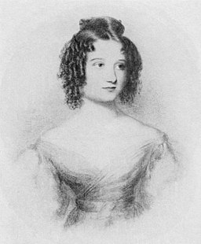
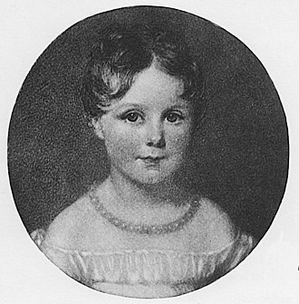
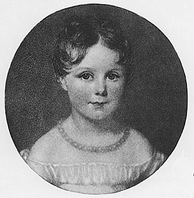
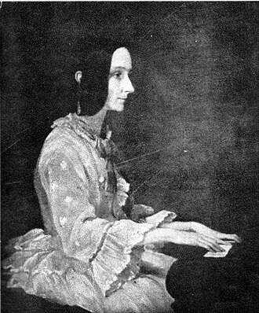
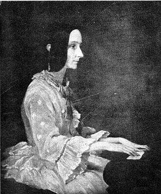

1815 – 1852
1815 – 1852
Ada Lovelace was an English mathematician and writer, chiefly known for her work on Charles Babbage's proposed mechanical general-purpose computer, the Analytical Engine. She was the first to recognise that the machine had applications beyond pure calculation. Between 1842 and 1843, Ada translated an article by the military engineer Luigi Menabrea (later Prime Minister of Italy) about the Analytical Engine, supplementing it with an elaborate set of seven notes, simply called "Notes". Lovelace's notes are important in the early history of computers, especially since the seventh one contained what many consider to be the first computer program—that is, an algorithm designed to be carried out by a machine.

Augusta Ada Byron was born in December 1815 in London. Her parents were Anne Isabella Byron and George Gordon Byron but best known as Lord Byron. Anne Isabella (called Annabella) was a good mathematician and was already gifted as a child. Her parents hired a retired professor from Cambridge University and she received an education in classical literature, philosophy, science and mathematics. At the time of Ada's birth, Lord Byron was one of England's most famous poets and a supporter of romanticism. He was a notorious womanizer, constantly in debt and had a reputation as "mad, bad and dangerous to know".
The marriage between Annabella and Byron may seem strange as they were very different but they were married at the beginning of 1815. The marriage did not last long but a month after Ada's birth they separated and Byron fled to France and would never see his daughter again.
Worried that Ada would get some of her father's more rebellious traits or interest in poetry, Ada was given a strict upbringing similar to her mother's in i.a. mathematics and logic. In an extract from her governess's diary we can read the following about her schedule.
At the age of 13, she had, among other things, William Frend as a teacher (who had been her mother's private tutor) and through him she got to know Mary Somerville who was a mathematician and popular writer. Through Mary, Ada got an entrance into London's scientific and literary society and in 1833 she met Charles Babbage. In 1835 she married William King, a slightly older gentleman who shared and encouraged Ada's interest in mathematics. In 1838 King became "Earl of Lovelace" and Ada then became "Countess of Lovelace" and then Ada Lovelace. They moved a little outside London and had three children. In a letter to Mary Somerville we can read the following about Ada's dedication to mathematics.
Charles Babbage began work on his "The Analytical Engine" in the mid 1830s and he and Ada Lovelace became good friends and she served as a sounding board and was fascinated by this machine and its possibilities.
In 1840, Babbage was invited to Turin to give a lecture attended by Luigi Menabrea, a young Italian engineer. He then wrote the first text on "The Analytical Engine". In 1844, Ada was asked to translate this text into English, where she also expanded a lot, e.g. with the appendix known as "Note G" containing instructions for how a program in "The Analytical Engine" would work. It is "Note G" that is usually called the first computer program and Ada therefore the first programmer.
Ada Lovelace was born on December 10, 1815. Her birth name was Augusta Ada Byron.
Ada showed a gift for mathematics at an early age. Her dad, Lord Byron who was a famous poet died when she was only 8 years old.she also head a talent for numbers and language.
When Ada was only twelve she made a small flying machine.
In 1833 while at a party in England Ada first meant Charles Babbage. She was fascinated by Babbage's ideas for a machine that could calculate numbers and presumably write letters. Ada was 17 when she meant Charles Babbage.
In 1835, Ada married William King.
In 1837 Ada and Babbage tested the first computer program. And Ada wrote the first computer program.
In 1838, William king and Ada Lovelace became Earl and Countess of Lovelace.
Ada had a bad habit of gambling every once in a while.
She translated an Italian mathematician's memoir in french in the subject of the Analytical Engine.
In 1843 Ada published her work and used the initials A.A.L standing for Augusta Ada Lovelace.
Ada wrote a book about c.
On November 27, 1852 she died at the age of 37. She died because she had cancer.
 

 
